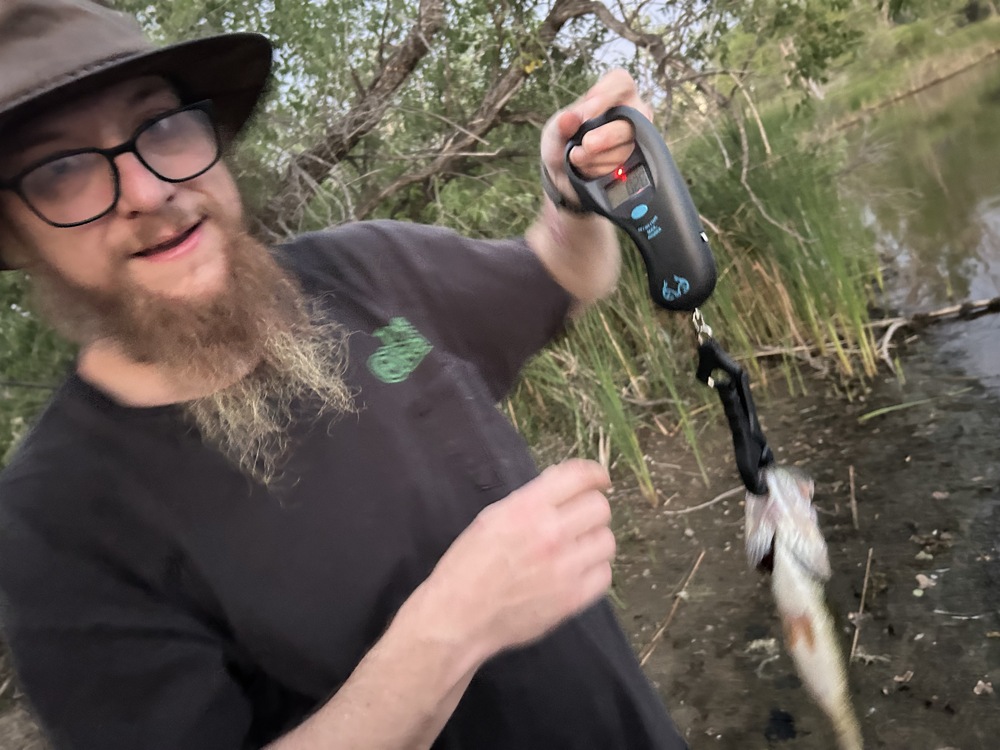
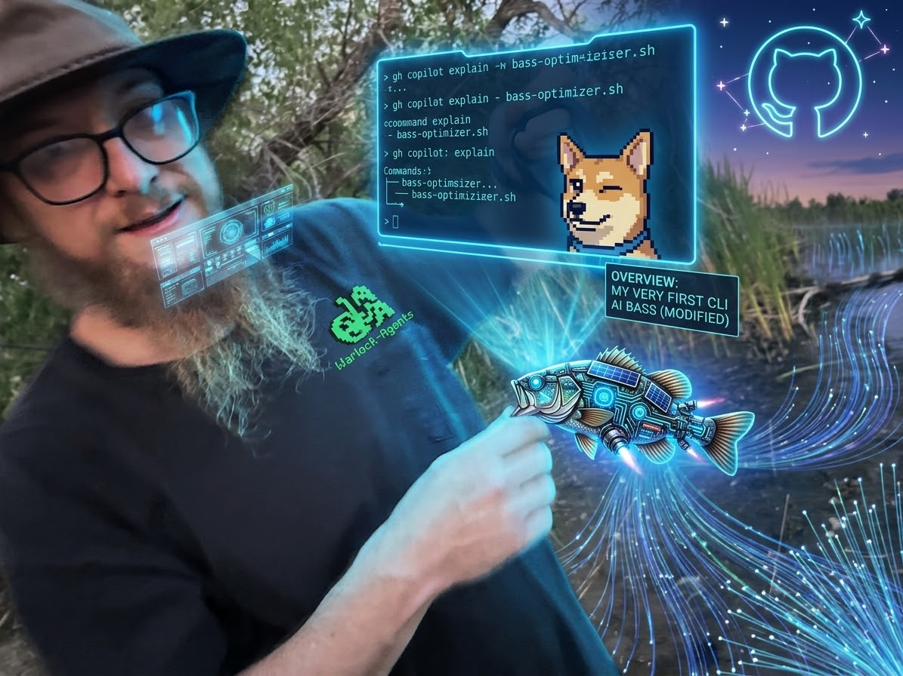
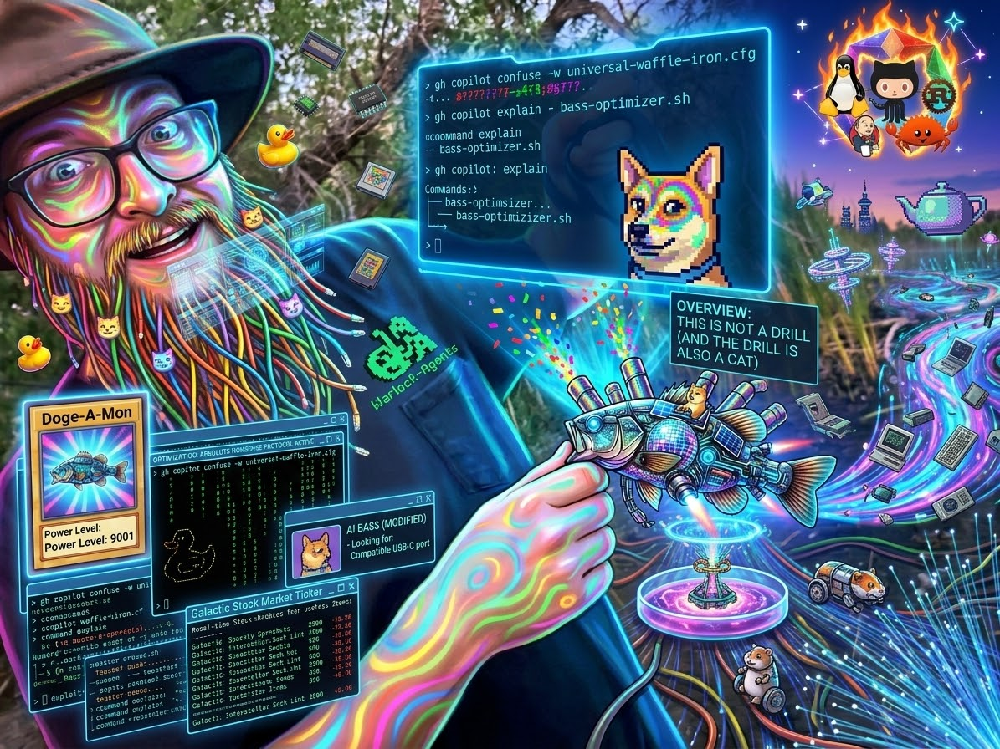

GitHub Copilot: From “AI is Cool” to Useful Work
A disciplined, repeatable engineering loop for your existing development environment. Not a feature tour—a reliable habit for shipping correct software today.
01 Not A Feature Tour
We are not covering every experimental toggle or claiming AI writes production systems for us. We focus on how an engineer directs the tool.
02 The Engineering Loop
Provide context, declare boundary intent, execute a focused change, and verify correctness with real tests and linters.
03 Ready For Flight Today
Walk away with a bounded, reviewable technique you can execute immediately on a small task in your active worktree.
Two Words. Infinite Interpretations.
What happens when prompt boundaries vanish: The Bass Hook.

“Just a guy, a fish, and a suspiciously large fish scale.”

“I’m giving a quick 15-min Copilot CLI overview. Opening with an ‘AI is cool’ bit. Turn this picture of me and my first bass into something kind of ridiculous?”

“more ridiculous”
The Useful Question Is Not “What Can AI Do?”
Shift focus from generalized AI capability to concrete engineering acceleration.
- ✕ Generating surreal imagery and synthetic stories for amusement.
- ✕ Broad conversational chatter that lacks domain precision.
- ✕ Novelty forgives inaccuracies: hallucinations are seen as creative quirks.
- ✔ Explaining unfamiliar classes: deciphering execution flow in legacy code.
- ✔ Locating implementations: finding relevant services without grep fatigue.
- ✔ Drafting focused tests: covering tricky edge-cases matching repo idioms.
- ✔ Diagnosing error traces: interpreting complex stack traces and failures.
Start In The Tool Already In Front Of You
Use the interface that matches the work. The discipline does not change.
- • Rapid repository exploration and mental mapping.
- • Shell scripts, build commands, and pipeline debugging.
- • Bounded changes reviewed directly in a git worktree.
- • Immediate status and diff checking without IDE lag.
- • Deep class hierarchies and collaborator analysis.
- • Suggesting focused unit tests matching project idioms.
- • Local inline suggestions for repetitive boilerplate.
- • Validated in real-time by the compiler and inspections.
- • Multi-language microservices, scripts, and documentation.
- • Docker, Kubernetes YAML, CI/CD workflow files.
- • Scoped symbol lookups across workspace trees.
- • Integrated terminal validation loops.
Context → Intent → Change → Proof
The four-stage loop for reliable engineering outcomes across any tool.
- • Provide specific files: symbol names, error messages, and command outputs.
- • State environment constraints: runtime versions, libraries, and protocols.
- • Declare desired behavior: state what success looks like explicitly.
- • Establish boundaries: say what may change, what must NOT change, and edit rights.
- • Ask for one focused edit: keep diffs small, isolated, and readable.
- • Enforce existing patterns: reuse existing domain helpers and error handling.
- • Inspect the diff: verify every added or removed line manually.
- • Run the checks: execute the smallest relevant unit test, build, or linter.
Say What You Mean—And What You Do Not Mean
Boundary language protects your worktree from silent refactoring and scope creep.
Identify the relevant files and tests.
Do not edit anything yet."
Model Choice Is A Tradeoff, Not A Leaderboard
When organizational credits are shared, model selection is an engineering resource decision.
- ✔ Codebase navigation and file exploration
- ✔ Explaining classes, functions, and error messages
- ✔ Routine boilerplate, formatting, and docstrings
- ✔ Small, single-function edits and straightforward unit tests
- ✔ Rapid, multi-turn conversational questions
- ✔ Multi-file architectural refactoring
- ✔ Unfamiliar legacy systems crossing domain boundaries
- ✔ Concurrency bugs, race conditions, and tricky edge-cases
- ✔ Tasks with heavily competing design constraints
- ✔ Deliberate escalation when lower tiers reach limits
Fluent Does Not Mean Correct
Guardrails we do not outsource. Fluency is not proof.
Models invent non-existent method signatures and parameters with complete syntactic confidence. Always verify against the actual source.
Broad prompts produce sprawling diffs. If you cannot understand every changed line in 3 minutes, reject it and narrow the scope.
Never paste API tokens, private keys, connection strings, customer PII, or unreleased proprietary specs into prompts.
Never blind-execute generated shell commands—especially operations involving rm, git reset, drop tables, or migrations.
Do not let Copilot silently decide system architecture, security boundaries, or business domain rules. Those need accountable human ownership.
Watch for swallowed exceptions, empty catch blocks, fake mocks, and removed assertions generated just to make tests green.
A Small Demo Beats A Giant Repository Tour
Applying the 4-step loop to a bounded slice of the repository live.
Keep The Power. Supply The Context.
Four non-negotiable principles for engineering leverage.
ANY QUESTIONS?
GitHub Copilot: From “AI is cool” to useful, repeatable engineering work.